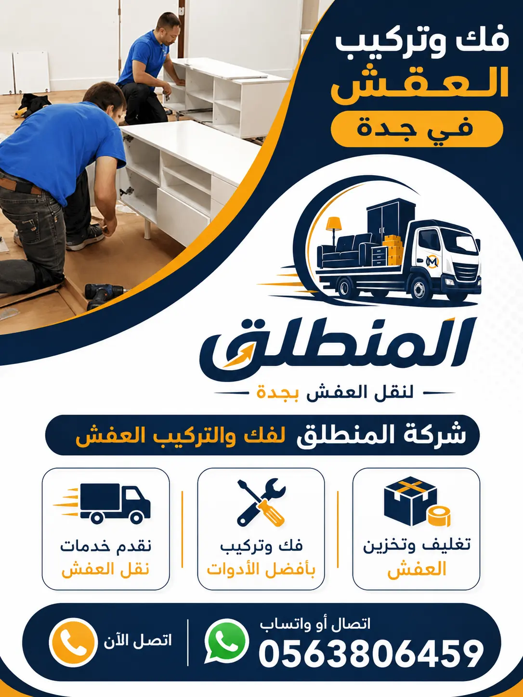

تُعد خدمة فك وتركيب العفش بجدة من أهم الخطوات الأساسية التي تسبق أي عملية انتقال أو تجديد للمنزل، حيث تتطلب هذه المهمة دقة عالية وعناية خاصة بجميع الأجزاء لضمان الحفاظ عليها من التلف. سواء كنت تخطط للانتقال إلى مسكن جديد في أحياء جدة المختلفة مثل الروضة، الصفا، أو أبحر، أو ترغب فقط في إعادة ترتيب ديكور منزلك الحالي وتجديده، فإن تفكيك العفش وإعادة تركيبه بطريقة صحيحة يشكل الفارق الحقيقي في الحفاظ على متانة الأخشاب والمفصلات.
تشمل خدماتنا الشاملة تفكيك كافة أنواع العفش، بدءاً من غرف النوم الرئيسية، الدواليب ذات التصاميم المتعددة، المطابخ الخشبية والألمنيوم، وصولاً إلى تجهيزات المكاتب والشركات، بالإضافة إلى التعامل الاحترافي مع عفش ايكيا الذي يتطلب اتباع أدلة وإرشادات خاصة. نعتمد في عملنا على فريق متخصص من النجارين والفنيين الذين يمتلكون المعرفة الكاملة بطرق التفكيك الآمنة لجميع التصاميم، القديمة منها والحديثة.
نوفر للعملاء مرونة عالية، حيث يمكن طلب خدمة الفك والتركيب وحدها في نفس الموقع، كما يمكن دمجها بشكل متكامل مع خيارات التغليف الاحترافي وخدمات نقل العفش عند الحاجة. هذا النهج يضمن لك الحصول على حلول متكاملة تناسب احتياجاتك المحددة، مع الاهتمام بأدق التفاصيل مثل ترقيم القطع وتجميع المسامير والبراغي لضمان عملية تركيب نهائية خالية من الأخطاء.
فك وتركيب العفش بجدة بطريقة منظمة وآمنة
نحرص على تنفيذ خدمة فك وتركيب العفش بجدة بأسلوب تنظيمي متكامل يبدأ منذ لحظة وصول الفريق إلى الموقع. تعتمد المنهجية على تقسيم العمل وفقاً لنوعية العفش الموجود في كل غرفة، بحيث يتم التعامل مع كل قطعة بناءً على الخامات المصنوعة منها وآليات التثبيت الخاصة بها. التنظيم هو الركيزة التي تمنع حدوث أي خلط بين أجزاء العفش المختلفة، حيث يقوم نجار فك وتركيب العفش بترقيم القطع وتصنيفها مباشرة.
نولي اهتماماً كبيراً لسلامة الأجزاء الحساسة مثل المفصلات، مجاري الأدراج، والمقابض. يتم فصل هذه القطع بعناية تامة وحفظها في أكياس مخصصة ومحكمة الإغلاق تُرفق مع الألواح الخشبية المطابقة لها. هذا المستوى من التنظيم لا يحمي العفش من الضياع فحسب، بل يساهم في تسريع عملية إعادة التركيب لاحقاً بشكل ملحوظ وبدون أي تعقيدات أو فقدان للبراغي.
إلى جانب ذلك، يتم استخدام أدوات حديثة ومخصصة لفك البراغي والمسامير بلطف لمنع اتساع الثقوب الخشبية أو إتلاف الهيكل الداخلي للأثاث. بفضل هذا النهج الآمن والمنظم، نضمن لك الحفاظ على القيمة الجمالية والعملية لعفشك، ليعود بعد التركيب كما كان تماماً وبنفس مستوى الثبات.
لماذا تحتاج إلى فني فك وتركيب العفش؟
الاستعانة بفني فك وتركيب عفش بجدة ليست مجرد خيار ثانوي، بل هي ضرورة لضمان الحفاظ على استثماراتك في الأثاث. قد تبدو عملية فك بعض القطع بسيطة في البداية، لكن التعامل مع التصاميم المعقدة، مثل الدواليب السحابة أو غرف النوم الحديثة، يتطلب خبرة عميقة لفهم هندسة التركيب الأصلية. الفني المتخصص يمتلك القدرة على تحديد نقاط الضعف في الأخشاب وتجنب الضغط عليها أثناء الفك.
من أبرز الفوائد التي يقدمها نجار فك وتركيب بجدة هو تقليل نسبة الأخطاء التي قد تؤدي إلى كسر المفصلات أو خدش الألواح الخارجية. كما أن التعامل مع القطع الكبيرة والثقيلة يحتاج إلى تقنيات معينة في التفكيك لتسهيل حملها دون إلحاق الضرر بالعمال أو الجدران المحيطة. كل خطوة تتم بدراسة وعناية لضمان سلامة الأجزاء بالكامل.
علاوة على ذلك، تبرز أهمية الفني بشكل واضح في مرحلة إعادة التركيب؛ حيث لا يقتصر دوره على تجميع القطع فقط، بل يمتد إلى ضبط الأبواب، وزن الدواليب، والتأكد من سلاسة حركة الأدراج والمفصلات. القطع التي تحتاج طريقة فك خاصة، مثل العفش الهيدروليكي، تجد لها حلاً جذرياً وآمناً مع فني تركيب عفش بجدة المتمرس.
أنواع العفش التي يمكن فكها وتركيبها بجدة
نقدم تغطية شاملة لجميع أنواع الموبيليا والأثاث المكتبي والمنزلي. يمتلك فريق العمل المهارة اللازمة للتعامل مع مختلف الخامات والتصاميم بكفاءة عالية، مما يجعلنا قادرين على تلبية كافة متطلباتك المتعلقة بتفكيك وتركيب العفش بجدة.
فك وتركيب غرف النوم بجدة
نتعامل مع غرف النوم المودرن والكلاسيكية بعناية فائقة. يتم تفكيك هيكل السرير، التسريحة، والكومودينات بطريقة تحافظ على الرسومات الزخرفية والزجاج المرافق، مع الترقيم الدقيق لإعادة التجميع بسلاسة.
فك وتركيب الدواليب بجدة
نفك جميع أنواع الدواليب بما فيها الدواليب ذات الستة أبواب والدواليب السحابة. نولي اهتماماً خاصاً بمجاري السحب والمفصلات لضمان عدم تعرضها للالتواء، ونعيد تركيبها مع موازنة دقيقة للأبواب.
فك وتركيب المطابخ بجدة
تشمل هذه الخدمة فك الخزائن العلوية والسفلية للمطابخ الخشبية وتجميعها مجدداً بشكل يحافظ على قوة تثبيتها بالجدران، مع الحفاظ الكامل على إكسسوارات المطبخ من الضياع.
فك وتركيب المجالس والكنب بجدة
بالنسبة للمجالس الكبيرة والكنب المتصل الذي يحتاج إلى تفكيك لتسهيل النقل، نقوم بفصل الأجزاء المرتبطة بمسامير أو قطع معدنية، وتغليفها بشكل منفصل لتجنب تمزق الأقمشة.
فك وتركيب عفش المكاتب بجدة
نعمل على فك الطاولات المكتبية، القواطع (Partitions)، مكتبات الملفات، وطاولات الاجتماعات. تنظيم العمل هنا ضروري لضمان إعادة التركيب في المقر الجديد بسرعة ودون تعطيل للأعمال.
فك وتركيب عفش ايكيا بجدة
يُعرف أثاث ايكيا بتفاصيله الكثيرة والاعتماد على الكتالوج. لدينا فنيون مطلعون على طرق التجميع الصحيحة لعفش ايكيا لضمان عدم تضرر الألواح الخشبية المضغوطة أثناء الفك والتركيب.
فك وتركيب عفش الفلل بجدة
تتطلب الفلل تعاملاً مع مساحات واسعة وعفش ضخم ومتنوع. نوفر فرق عمل متعددة لإنجاز المهام الكبيرة بكفاءة وسرعة، مع تنسيق كامل لكل غرفة على حدة.
فك وتركيب عفش الفنادق بجدة
نقدم خدمات مخصصة لقطاع الضيافة تشمل فك وتركيب أثاث الغرف الفندقية بشكل متطابق ومنظم، مع الالتزام بالجدول الزمني لضمان جاهزية الغرف للتشغيل السريع.
خطوات فك وتركيب العفش بجدة
لضمان تنفيذ العمل بأعلى مستويات الاحترافية، نتبع سلسلة من الخطوات المنظمة التي تم تطويرها لتقديم خدمة فك وتركيب العفش بجدة خالية من الأخطاء:
-
1
المعاينة
نقوم بفحص العفش وتقييم حالته، وتحديد القطع التي تحتاج إلى أدوات أو عناية خاصة أثناء الفك.
-
2
تجهيز الأدوات
إعداد كافة المفكات الكهربائية واليدوية، ومعدات الحماية والترقيم المناسبة لنوع الموبيليا.
-
3
التفكيك
البدء بفك الأجزاء الخارجية بعناية، ثم الانتقال إلى الهياكل الداخلية لضمان عدم تعرض القطع لأي ضغط غير مبرر.
-
4
ترقيم الأجزاء
وضع ملصقات ترقيم واضحة على القطع المتشابهة لتسهيل مطابقتها بدقة عند إعادة التركيب.
-
5
حفظ المسامير والمفصلات
جمع كافة البراغي والإكسسوارات في أكياس مخصصة وربطها بالألواح التابعة لها لمنع فقدانها.
-
6
حماية القطع
تأمين الزوايا الحادة والزجاج باستخدام عوازل مؤقتة لتجنب الخدوش أو الكسر.
-
7
التغليف (عند الحاجة)
إذا طلب العميل، نقوم بتغليف القطع بالفقاعات البلاستيكية والكرتون المقوى لتجهيزها للنقل الآمن.
-
8
النقل (عند طلب العميل)
نقل العفش بعناية باستخدام سيارات مبطنة ومجهزة إلى الموقع الجديد.
-
9
إعادة التركيب
تجميع القطع بناءً على الترقيم السابق، مع وزن الأبواب وضبط المفصلات لتعمل بسلاسة تامة.
-
10
المراجعة النهائية
إجراء فحص شامل للموبيليا بعد التركيب للتأكد من ثباتها وجودة العمل قبل تسليمها للعميل.
فك وتركيب غرف النوم والدواليب بجدة
غرف النوم من أكثر أجزاء المنزل التي تتطلب عناية خاصة نظراً لكثرة التفاصيل والقطع المكونة لها. خدمة فك وتركيب غرف النوم بجدة لدينا تضمن لك تفكيك السرير بشكل سليم دون إتلاف مسامير التثبيت الأساسية، بالإضافة إلى فك التسريحات والكومودينات مع الحفاظ على الأسطح الزجاجية والمرايا.
أما بالنسبة للدواليب، فنحن نتعامل مع الدواليب المفصلية التقليدية وكذلك الدواليب السحابة التي تحتوي على مجاري انزلاق معقدة. يتم فك أبواب الدواليب الكبيرة والمتعددة الأجزاء بحذر شديد مع التركيز على الترقيم الدقيق. وعند إعادة التركيب، يقوم نجار فك وتركيب بجدة بضبط الأبواب والمفصلات بميزان مائي لضمان إغلاقها بشكل محكم وبدون أي احتكاك يعيق حركتها. لخيارات أكثر تخصصاً، يمكنك الاطلاع على نقل وفك غرف النوم.
فك وتركيب المطابخ بجدة
تفكيك المطابخ يعتبر مهمة تقنية دقيقة تتطلب خبرة للتعامل مع وحدات التخزين العلوية والسفلية. نقدم خدمة فك وتركيب المطابخ بجدة للمطابخ الخشبية والألمنيوم، حيث نقوم بفك الخزائن، الأبواب، والأدراج بعناية لمنع أي ضرر يلحق بالهيكل الخارجي.
كما نولي اهتماماً بالغاً بفك الإكسسوارات الداخلية للمطبخ والترقيم الدقيق لكل قطعة. وعند إعادة التركيب في الموقع الجديد، نضمن تثبيت الخزائن العلوية بشكل متين وآمن لضمان سلامة الاستخدام اليومي. لمزيد من التفاصيل حول التعامل مع المطابخ، يمكنك زيارة صفحة خدمات المطابخ.
فك وتركيب عفش المكاتب والشركات بجدة
ندرك تماماً أن الوقت هو عامل حاسم للشركات، لذا نوفر خدمة فك وتركيب عفش المكاتب بجدة بمرونة وسرعة تضمن عدم توقف أعمالك لفترات طويلة. يقوم فريقنا المتخصص بتفكيك مكاتب الإدارة، طاولات الاجتماعات الكبيرة، والخزائن الخاصة بحفظ المستندات بطريقة منهجية.
الترقيم الدقيق والتنظيم العالي يلعبان دوراً رئيسياً هنا، حيث يضمن فني تركيب عفش بجدة إعادة بناء الأرفف والقواطع المكتبية في الموقع الجديد بنفس الترتيب، مع التركيز على ثبات الهياكل وتجهيز المكاتب لاستقبال أجهزة العمل والبدء بالتشغيل الفوري. يمكنك طلب الخدمات التجارية عبر صفحة عفش المكاتب بجدة.
تركيب عفش ايكيا بجدة
يتطلب عفش ايكيا معاملة خاصة لكونه يعتمد بشكل كبير على دقة التجميع والمسامير الخاصة. نقدم خدمة تفكيك و تركيب عفش ايكيا بجدة بواسطة فنيين ملمين تماماً بطرق التركيب المعتمدة في كتالوجات ايكيا.
نحرص على اتباع الدليل خطوة بخطوة، مع ترتيب القطع الخشبية وحفظ البراغي الأصلية لضمان عدم استخدام مسامير بديلة قد تؤثر على جودة الأثاث. بعد التركيب، نقوم بفحص الأجزاء للتأكد من متانة القطع ومطابقتها للتصميم الأصلي، مما يمنحك راحة البال واستخداماً آمناً وطويل الأمد.
هل تشمل الخدمة التغليف والنقل؟
المرونة هي أساس خدماتنا؛ يمكنك بكل بساطة طلب خدمة فك وتركيب العفش وحدها، سواء كان ذلك لغرض تغيير ترتيب الغرف داخل نفس المنزل، أو تمهيداً لأعمال الدهانات وتجديد الديكور.
وعند الحاجة، يمكن دمج الخدمة بسهولة مع باقاتنا المتكاملة، حيث نوفر خيارات متطورة لـ خدمات التغليف لحماية العفش المفكك من الخدوش والأتربة. كما نقدم سيارات مجهزة في حال رغبت في نقل العفش عند الحاجة، بالإضافة إلى توفير ونش رفع العفش للتعامل مع الأدوار المرتفعة بأمان تام، وخدمات مستودعات تخزين العفش لفترات متغيرة.
أسعار فك وتركيب العفش بجدة
نحرص دائماً على تقديم أسعار فك وتركيب العفش بجدة بشكل شفاف يعكس قيمة العمل وحجم الجهد المبذول بدون أرقام مبالغ فيها أو تكاليف خفية. تكلفة فك وتركيب العفش بجدة تختلف بناءً على معطيات العمل الميداني، ولا يتم تحديد سعر موحد إلا بعد التعرف على احتياجات العميل بدقة.
يتم تقديم عروض أسعار مبنية على تقييم فعلي وعادل يضمن حصولك على خدمة متقنة من نجار فك وتركيب بجدة دون المساس بجودة العمل. يمكنك التواصل معنا للحصول على عرض سعر فوري بعد تقديم بعض التفاصيل البسيطة عن عدد القطع ونوع العفش عبر الواتساب أو الهاتف.
العوامل التي تحدد تكلفة فك وتركيب العفش
لفهم كيفية احتساب السعر النهائي لخدماتنا، نستعرض لك العوامل المؤثرة بشكل مباشر على تكلفة الخدمة:
- عدد القطع وحجم العفش: كلما زاد عدد الغرف والدواليب، زاد الوقت والجهد المطلوبين من الفنيين.
- نوع العفش ودرجة التعقيد: التعامل مع عفش ايكيا أو الدواليب السحابة الكبيرة يختلف عن فك القطع البسيطة ويحتاج لوقت أطول.
- الحاجة للتغليف: إضافة مواد تغليف عالية الجودة لحماية القطع سيضيف تكلفة مناسبة لضمان الأمان.
- المسافة وخدمات النقل: في حال دمج الخدمة مع النقل، ستؤثر المسافة بين الموقعين على التكلفة الإجمالية.
- عدد الطوابق ووجود المصعد: وجود مصعد يسهل نقل الألواح، بينما النقل اليدوي عبر الدرج أو طلب الونش يضيف تكاليف إضافية.
الأسئلة الشائعة حول فك وتركيب العفش بجدة
ما هي خدمة فك وتركيب العفش بجدة؟
هي خدمة متخصصة تشمل تفكيك كافة أنواع غرف النوم، الدواليب، المطابخ، والعفش المكتبي بجدة عبر نجارين وفنيين متمكنين، وإعادة تركيبها وموازنتها بدقة في المقر الجديد.
هل يمكن طلب الفك والتركيب فقط بدون نقل؟
نعم بالتأكيد، يمكنك طلب خدمات الفك والتركيب فقط داخل نفس المنزل لأغراض تجديد الديكور أو الصيانة أو عند شراء عفش جديد دون الحاجة لطلب خدمات الشحن أو النقل.
هل تشمل الخدمة فك وتركيب غرف النوم؟
نعم، تشمل الخدمة فك وتركيب جميع أنواع غرف النوم بما فيها الأسرة والتسريحات والكومودينات مع الحفاظ على المسامير والمفصلات.
هل تشمل فك وتركيب الدواليب؟
بالتأكيد، يتم فك وتركيب الدواليب بجميع أنواعها، سواء كانت مفصلية أو سحابة أو دواليب كبيرة متعددة الأبواب.
هل يتم فك وتركيب المطابخ؟
نعم، نوفر فنيين لفك وتركيب وحدات المطابخ الخشبية والألمنيوم بدقة، مع ترتيب الأدراج والخزائن وإعادة تثبيتها بنجاح.
هل يتم تركيب عفش ايكيا بجدة؟
نعم، لدينا فنيون مطلعون على إرشادات تجميع وتركيب أثاث وعفش ايكيا بمختلف تصميماته لضمان تركيبه بشكل آمن وسليم.
هل تتوفر خدمة فك وتركيب عفش المكاتب؟
نعم، نقدم خدمة فك وتركيب عفش المكاتب والشركات بجدة بما يشمل الطاولات، القواطع، الكراسي، والخزائن بشكل يضمن سرعة العودة للعمل.
كيف يتم حفظ المسامير والمفصلات؟
نحرص على تجميع المسامير والبراغي والمفصلات ووضعها في أكياس مخصصة وربطها بالقطعة الأساسية لمنع ضياع أي جزء أثناء النقل أو التخزين.
هل يمكن إضافة التغليف؟
نعم، يمكن طلب تغليف القطع بعد فكها باستخدام الفقاعات والنايلون لحمايتها من الخدوش والأتربة.
هل يمكن إضافة النقل بعد الفك؟
بالطبع، يمكننا توفير سيارات مجهزة لنقل العفش بعد عملية الفك بأمان إلى الوجهة المطلوبة داخل جدة.
هل يمكن استخدام الونش للأدوار المرتفعة؟
نعم، نوفر خدمة الونش لتنزيل ورفع قطع العفش الكبيرة التي يصعب نقلها عبر السلالم أو المصاعد.
كيف يتم تحديد تكلفة فك وتركيب العفش؟
تعتمد التكلفة على كمية القطع، نوع العفش، مدى تعقيد الفك، وعدد الغرف، إلى جانب الخدمات الإضافية مثل التغليف والنقل.
كم يستغرق فك وتركيب العفش؟
تختلف المدة حسب عدد الغرف وحجم القطع، لكننا نحرص دائماً على إنجاز المهمة في الوقت المتفق عليه بكفاءة عالية.
هل الخدمة متاحة في جميع أحياء جدة؟
نعم، خدماتنا تغطي كافة مناطق وأحياء جدة مثل الروضة، الصفا، السلامة، البساتين وغيرها من الأحياء.
كيف يمكن حجز الخدمة؟
يمكنك الحجز عن طريق الاتصال برقمنا المباشر أو التواصل معنا عبر الواتساب لتحديد الموعد المناسب.
اطلب خدمة فك وتركيب العفش بجدة
تواصل معنا الآن للحصول على خدمة احترافية تضمن سلامة أثاثك وعفشك بأيدي فنيين ونجارين متخصصين بأسعار تنافسية.